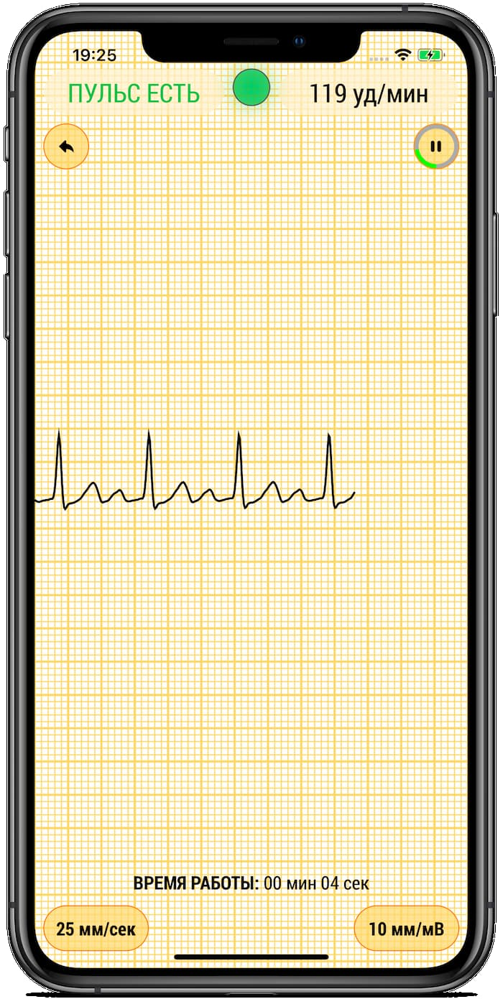
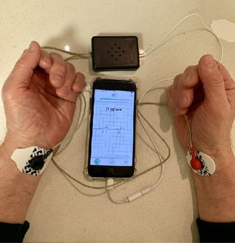
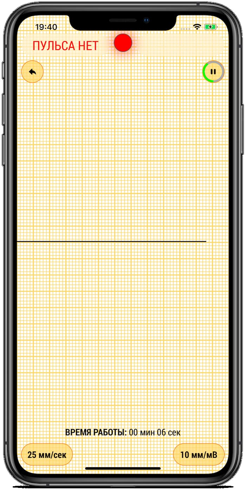
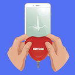
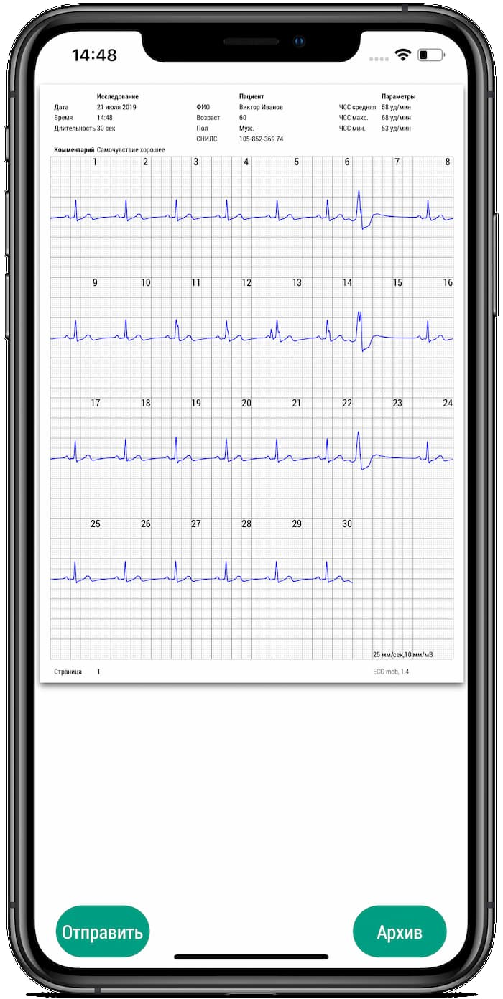
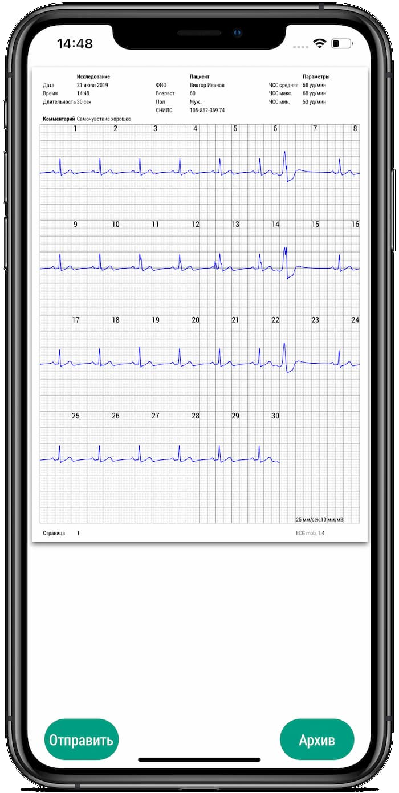
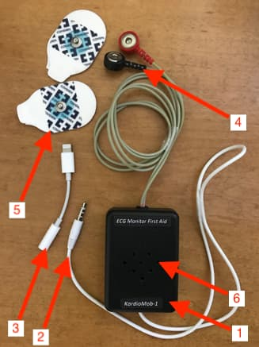
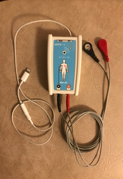
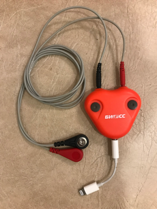

ПЕРСОНАЛЬНЫЙ ПРИБОР ДЛЯ КОНТРОЛЯ ЗА СЕРДЦЕМ
Прибор разработан для совместного использования со смартфоном и предполагает два варианта использования.Первая помощь
Оказание первой помощи окружающими людьми пострадавшему человеку до прибытия медиков (как индикатор пульса).Контроль за нарушениями кардиоритма
Контроль за нарушениями кардиоритма в домашних условиях.Кому и в каких ситуациях «КардиоМоб» необходим
Первая помощь
- На курсах обучения первой помощи
- При комплектации автомобильных аптечек
- В отрядах гражданской обороны
- Для санитаров боевых частей в армии
- Для телохранителей
- Для полицейских
- Будет полезен в аптечках туристов, альпинистов, а также в комплектах первой помощи, находящихся в офисах, производственных помещениях и средствах транспорта
Контроль за нарушениями кардиоритма
- Кардиореабилитация после операций или инфаркта
- Выявление аритмий
- Контроль за действием лекарств
- Контроль за состоянием пациентов из групп риска
- Фитнес контроль
Как «КардиоМоб» работает
Скачайте бесплатные приложения«FA mob»
«ECG mob»

Первая помощь
Скачайте бесплатное приложение «FA mob» для iPhone из App Store.Контроль за нарушениями кардиоритма
Скачайте бесплатное приложение «ECG mob» из App Store или Play Market.
Снимите с клеящих электродов защитное покрытие (сохраните его, поместив в чехол) и приклейте электроды на запястья, причем электрод, прикрепленный к черной кнопке, приклейте к левому запястью, а прикрепленный к красной кнопке к правому запястью. Подключите ЭКГ монитор к смартфону. Для первой помощи положите ЭКГ монитор рядом с пострадавшим, проследите, что бы отверстия для выхода звука были сверху. Для контроля за нарушениями кардиоритма, в положении сидя, самостоятельно проделайте перечисленные действия.
Запустите приложение (нажмите на иконку «FA mob»), появиться стартовая страница приложения. Затем нажмите на кнопку «Запуск», появиться страница, на которой отображается процесс работы сердца пострадавшего.
Запустите приложение (нажмите на иконку «ecg mob»), появятся страницы настройки (настройка проводится один раз). Здесь вводится: фамилия, имя, пол, дата рождения, устанавливается длительность записи 30, 60 или 180 секунд и записывается адрес, по которому можно отправить ЭКГ на расшифровку. Для регистрации ЭКГ необходимо нажать круглую кнопку с изображением ЭКГ.





В том случае, если сердце работает, на экране смартфона будет двигаться электрокардиограмма (ЭКГ) и появиться надпись «ПУЛЬС ЕСТЬ». Если же сердце остановилось, то вместо ЭКГ идет прямая линия и появляется надпись «ПУЛЬСА НЕТ», в этом случае нужно немедленно начать делать пострадавшему массаж сердца и искусственное дыхание. Эффективность этих действий необходимо постоянно контролировать по экрану смартфона.
После окончания записи появится страница с ЭКГ в формате PDF. Если вы хотите отправить свою ЭКГ на заданный адрес, нажмите кнопку «Отправить». Появится страница почтового приложения с прикрепленной ЭКГ. Здесь также нажмите кнопку «Отправить». ЭКГ можно и не отправлять, а прийти на прием к кардиологу и показать ему запись в смартфоне.
Устройство и характеристики «КардиоМоб»
- Корпус прибора
- Кабель для подсоединения к смартфону или планшету с разъемом для наушников
- Кабель – адаптер для подключения ЭКГ Монитора к разъёму для зарядки смартфона
- Электродный кабель с кнопочными разъёмами для подключения к ЭКГ электродам
- Клеящие ЭКГ электроды с твердым гелем
- Отверстия на корпусе ЭКГ монитора для выхода звука

Габаритные размеры: 70 Х 50 Х 20 мм
Вес: 60 гр.
Питание: батарея 3В CR 2032
В варианте «Первой помощи» время работы от одной батареи не менее 400 часов. При контроле за кардиоаритмиями количество записей и передач ЭКГ не менее 30 тысяч. Остальные характеристики соответствуют российским и международным стандартам для амбулаторных ЭКГ мониторов.
Вес: 60 гр.
Питание: батарея 3В CR 2032
В варианте «Первой помощи» время работы от одной батареи не менее 400 часов. При контроле за кардиоаритмиями количество записей и передач ЭКГ не менее 30 тысяч. Остальные характеристики соответствуют российским и международным стандартам для амбулаторных ЭКГ мониторов.
Комплектация «КардиоМоб»
- Персональный ЭКГ монитор
- Программное обеспечение ‒ Приложения FA mob и ECG mob для смартфона
- Инструкция
- Чехол для хранения и переноски прибора
- Приклеиваемые ЭКГ электроды, 6 штук в пакете и 2 соединенные с электродным кабелем.
- Электроды фирмы Covidien, тип H92SG (с твердым гидрогелем) или другого типа с близкими характеристиками
- Кабель-адаптер для iPhone без разъёма для наушников (Apple Lightning to 3.5mm)
Где купить
ЭКГ монитор «КардиоМоб» пока еще не выпускается серийно, но фирмой НПФ БИОСС (www.bioss.ru, www.cardio.bioss.ru) выпускаются два прибора, которые также можно использовать с приложениями FA mob и ECG mob, это: ИКРЗ-1 (рис 1) и мини кардиограф «Сердечко» (рис 2). У них те же функции, что и у «КардиоМоб», но конструктивно они менее удобны для варианта Первой помощи и у них отсутствует звуковая индикация пульса.

